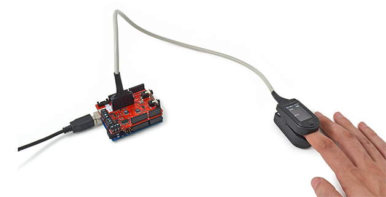

Pulse and oxygen in blood sensor (SPO2)

#include <Wire.h>
#include <PinChangeInt.h>
#include <eHealth.h>
int cont = 0;
void setup() {
Serial.begin(115200);
eHealth.initPulsioximeter();
pinMode(6, INPUT); digitalWrite(6, HIGH);
PCintPort::attachInterrupt(6, &readPulsioximeter, RISING);
}
void loop() {
Serial.print(eHealth.getBPM());
Serial.print("&");
Serial.print(eHealth.getOxygenSaturation());
Serial.println("");
delay(500);
}
//Include always this code when using the pulsioximeter sensor
//=========================================================================
void readPulsioximeter(){
cont ++;
//Serial.println("ISR");
if (cont == 50) { //Get only of one 50 measures to reduce the latency
eHealth.readPulsioximeter();
cont = 0;
}
}
Descargar aplicación Pulse and oxygen in blood sensor (SPO2)